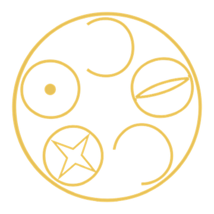

Papers, findings and open apps on polyhedra, space-filling and icosahedral order, by DICTO
About. DICTO is a geometric sculptor in Osaka. The work grows out of building with recycled PET bottles and from three open apps on one shared geometry: Kaleidohedra, Rhombiverse and Polyhedraverse.
This record gathers all of DICTO's published geometry in one place. It opens with a short essay, Quanta of Space, then lists the papers in four chapters: Atoms (new solids), Bonds (how pieces fill space), Shells (layers round a core) and Cycles (rules that turn one shell into the next).
Each paper has its own DICTO DOI, which always opens its newest version. The numbers (#1, #2 …) are the paper numbers on dictospheres.com; DICTO's findings are numbered separately, F1, F2 …. What changed in each version is listed at the end.
Is space smooth all the way down, or is it built from pieces, as a wall is built from stones? Thinkers have wondered about this for two and a half thousand years. These works take the question literally: they look for exact sets of solid pieces that fit together, with no gaps, into shells, cycles and whole spaces.
Leucippus and Democritus taught that the world is made of indivisible atoms moving in the void. The atoms differ only in shape, arrangement and position. Lucretius put the teaching into verse: “nothing exists per se except atoms and the void”. The atoms were pieces, but no one said what shapes they had.
Plato gave them shapes. In the Timaeus the four elements are four regular solids: fire is the tetrahedron, air the octahedron, water the icosahedron and earth the cube. All four faces are built from just two right triangles. The fifth solid, the dodecahedron, was used “for the whole”. It was the first tile kit for matter: a small set of exact pieces from which everything is assembled.
Aristotle answered that solid atoms must fill space. He wrote (On the Heavens III.8) that among solids two do: the pyramid and the cube. He did not say which pyramid. His commentators took it to be the regular tetrahedron, which on its own leaves a small gap, and argued over it for centuries. Read as he wrote it, he was right: many pyramids fill space. Paper #44, Aristotle’s Pyramid, proves which pyramids cut from the centres of the Platonic solids do. One dimension up, even the regular tetrahedron closes, twenty round every corner of the 600-cell (#63). Paper #65, The Red Queen 120-cell, proves that all five of his pyramids are the cores of the regular four-dimensional solids, with exactly his proportions.
Johannes Kepler nested the five solids between the planets’ spheres (Mysterium Cosmographicum, 1596). In The Six-Cornered Snowflake (1611) he explained the snowflake by the packing of equal small units, the question that became the Kepler conjecture. Paper #8, The Euclid–Kepler–Pacioli Cell, finds all five Platonic solids nested on 13 points of one repeating cell.
In 1900 Max Planck found that energy comes in quanta. In loop quantum gravity, space itself does too. Carlo Rovelli and Lee Smolin showed in 1995 that area and volume come in discrete amounts. In 2011 Eugenio Bianchi, Pietro Doná and Simone Speziale showed that each quantum of volume can be read as a small convex polyhedron, fixed by the areas and directions of its faces. Space becomes a network of polyhedra joined face to face.
There is an honest difference. In that theory two neighbouring quanta share a face of the same area, but not, in general, of the same shape (Freidel and Speziale, 2010). The pieces need not fit. Our pieces always fit exactly, corner to corner.* Other approaches, such as causal sets, build spacetime from points rather than solids.
This collection makes no claim about physics. It shares the question and the form: what are the smallest exact pieces from which space can be built, and how do they join?
* The rule of halves and the Swap Rule. Equal balls pack most closely in flat layers, and each new layer can sit on the one below in one of two ways, so the layers can be stacked in endless orders: the cubic packing, the hexagonal packing, and every mixture of the two, repeating or never repeating. Cutting space round the balls and the holes between them gives exact pieces. We proved that, whatever the order, each piece is borrowed from the two pure packings, whole or as two halves, the top half fixed by the layer above and the bottom half by the layer below (#57, #61). A few kinds of half-piece build every stacking there is. The Swap Rule works like a conservation law: the two mixed pieces always add up to the two pure ones, so mixing moves volume between pieces but never creates or loses it. Both rules hold in real crystals: rock salt, cadmium iodide, zinc blende and the Laves phases (#64). The pieces are finite in kind, local in rule and conserved in sum.
Read this way, the works fall into four chapters.
The shells have the longest history. Aristotle wrote that among solids the pyramid fills space (On the Heavens III.8). His commentators argued for centuries over how many tetrahedra meet round a point: Simplicius and Averroës said twelve, others twenty, and Thomas Bradwardine saw that the icosahedron cuts from its centre into twenty equal tetrahedra without being able to say whether they are regular (Lagarias and Zong, 2012). They are not: they are the Cleo-Icos (#19, #44). Kepler nested the Platonic solids in shells round the Sun (Mysterium Cosmographicum, 1596). In four dimensions the twenty tetrahedra do close regularly, round every vertex of the 600-cell, found by Schläfli about 1852 and modelled in sections by Alicia Boole Stott about 1900. In The White Queen 600-cell (#63) its 600 cells fall into 15 shells round one vertex, each shell of one kind of piece, round a core of twenty Cleo-Icos filling an icosahedron: Aristotle's pyramid, Bradwardine's twenty and Kepler's shells, one dimension up.
Some patterns repeat, like the tiles of a bathroom floor. Others never repeat, yet are perfectly ordered, like the Penrose tiling. These works use the same pieces to build both.
For most of history, order in matter meant repetition. A crystal was a single cell copied without end, and five-fold symmetry was thought impossible in it. In 1982 Dan Shechtman found a metal alloy with sharp five-fold diffraction. Quasicrystals, ordered but never repeating, earned him the Nobel Prize in 2011. Matter has two kinds of order, and the question became how they meet.
The quanta in these works sit on that border. One exact kit builds the repeating octet and also a Fibonacci crystal that never repeats (#40, The DICTO OG Family on Every Stacking). In A Fibonacci Spine (#30), five repeating packings of the OG meet round a five-fold axis. The copies removed along that axis form exactly the Fibonacci chain, the simplest never-repeating order. The golden shells of the Spheres of Dharma (#23) repeat only by growing φ³ larger at each turn. One kit, two orders: the pieces themselves are the bridge.
Three things recur. Finite kits are enough: a handful of exact shapes builds shells and spaces without limit. The golden ratio appears wherever five-fold symmetry does, and it decides when shells close. And the pieces join the two orders of matter, the repeating and the never-repeating.
The ancients guessed that space was made of shaped pieces, and modern physics has returned to the idea. These works build such pieces exactly and test them, and each paper that follows ends in a proof.
Sources for the introduction: Plato, Timaeus (tr. B. Jowett); Lucretius, On the Nature of Things (tr. W. E. Leonard); Aristotle, On the Heavens III.8 (tr. J. L. Stocks); J. Kepler, Mysterium Cosmographicum (1596) and Strena seu de nive sexangula (1611); D. Shechtman, I. Blech, D. Gratias, J. W. Cahn, Phys. Rev. Lett. 53 (1984) 1951; C. Rovelli, L. Smolin, Nucl. Phys. B 442 (1995) 593; L. Freidel, S. Speziale, Phys. Rev. D 82 (2010) 084040; E. Bianchi, P. Doná, S. Speziale, Phys. Rev. D 83 (2011) 044035; S. Surya, Living Rev. Relativ. 22 (2019) 5.
A paper that belongs to two chapters is listed in both and marked also in …; it is counted once.
Single solids, each an exact new piece.
| # | Work | About | DOI |
|---|---|---|---|
| #96 | Reading the Voids: Spherical Waves, Harmonics and Golden Bricks in the Gaps of a Packing (2026) also in Bonds | Spherical waves reveal and close the gaps of a packing, read with harmonics, with golden bricks grown in the gaps and DICTO's Bull-horns OG adaptor as the basis. Proved exactly: the OG and the cut OG of #95 have nonzero Dehn invariants, and so do the room adaptor of every lattice packing of either solid and the Bull-horns adaptor, so none of them can be cut into golden rhombohedra. The room of the cut OG closes with one piece, the DICTO Void Keeper, and the two fill space by translation; round the OG a fill by the OG, the DICTO Golden Skin and one golden rhombohedron makes the skin as thin as wished. Listed in its Version 3: golden tetrahedra cannot cancel the OG's Dehn invariant either (strong numerical evidence), so there is no completely golden fill. | DICTO DOI: 10.5281/zenodo.23968272 |
| #95 | Pentagons for the Kites: How One Idea for the DICTO Ogdoecontahedron Grew (2026) also in Bonds | Put a pentagon in the middle of each five-kite star of the DICTO Ogdoecontahedron. Proved: one flat cut at each of the twelve five-fold corners removes exactly the twelve corners that lie off the OG's sphere, and the hull of the remaining 90 corners is the rectified truncated icosahedron, its corners the edge midpoints of a regular truncated icosahedron. Following DICTO's further proposals: an all-equal-edge version, which on a pyrochlore network turns into the body-centred cubic packing of truncated octahedra; kits for the cut OG on the octet truss and the gyrated octet; and DICTO's Bull-horns OG adaptor adapted to the cut solid, so that two shapes fill space. Listed in its Version 3: stacks mixing octet and twin boundaries close with the same seven shapes. Listed in its Version 4: the all-equal-edge row checked; the arrangement is known among near-misses, this solid was not found in those sources. | DICTO DOI: 10.5281/zenodo.23968270 |
| #94 | The Silent Golden Station: The Harmonic Fingerprint of the Cube–Octahedron Sweep Finds Icosaxes, and Only Icosaxes (2026) also in Bonds | From DICTO's widening of the search to harmonics, waves and resonance. Proved: along the sweep of #90 from the octahedron to the cube, the fourth-degree harmonic fingerprint Q4 of the corners (the bond-orientational order of Steinhardt, Nelson and Ronchetti) vanishes at exactly one point, μ = φ, DICTO's Icosaxes, whose 24 corners are two icosahedra, so the one cubic solid on the sweep sounds icosahedral; Q8 vanishes at φ and at (√13 − 1)/2, and on the sweep from the cuboctahedron to the rhombic dodecahedron Q4 vanishes once, at a point with no golden number. Listed in its Version 2: two outside tests on the same sweep, Mahler's volume product (largest at a cubic irrational just past Icosaxes, not golden) and roundness (the roundest member is μ = √3, and √n in n dimensions, by Lindelöf's theorem), with the Delian walk and the four-dimensional sweep of #91. | DICTO DOI: 10.5281/zenodo.23934349 |
| #91 | Four-Dimensional Solids Whose Every Cell Is a Golden Cut: Dual Pairs through the Dimensions (2026) | Follow each Platonic solid with its dual through the dimensions. Proved: the flat sections of the product of a solid and its polar are exactly its corner cuts, so all ten golden cuts of #88 lie on three sweeps; for the tesseract and the 16-cell two sections are DICTO All-Golden Polytopes, four-dimensional solids whose every cell is a golden cut (Icosaxes beside the Lesser Golden Cut Tetrahedron, Unborn Axes beside the Greater). The DICTO Ogdoecontahedron and the four middle stations of the polar Dharma cycle are sections and hulls of the dodecahedron's product, with DICTO's Lesser and Greater Golden OG and the DICTO Golden Tight Cycles. | DICTO DOI: 10.5281/zenodo.23931389 |
| #90 | Golden on the Octahedron, Silver on the Cube: Six Dimensions and the Golden Cut Cubes (2026) | Six dimensions, the product of a cube and an octahedron, are the natural home of the pair. Its sections sweep from the octahedron through Icosaxes and Unborn Axes, the cuboctahedron and both Golden Cut Cubes to the cube, and fill space in caesium chloride pairs at every step. Proved: the Golden Cut Cubes, which DICTO named the Galois twins, need √2 together with √5, so the golden ratio alone never gives them; cut at the Fibonacci slope the product gives Icosaxes, while the same cut for the cube gives the silver ratio 1 + √2, the Archimedean truncated cube. | DICTO DOI: 10.5281/zenodo.23931136 |
| #89 | All Five Golden Pairs Are Slices of Four-Dimensional Solids: Golden Cuts beyond Plato (2026) | The golden cuts of #88 carry beyond the Platonic solids. Proved: four of the five golden pairs are slices of regular four-dimensional solids; no slice of a regular four-dimensional solid is a cut cube, and the Golden Cut Cubes are slices of the rectified tesseract. Beyond the regular solids golden cuts are rare: the DICTO Golden-Regular Cuts of the icosidodecahedron (Zefiro's 2011 stages, found by DICTO independently) and the snub dodecahedron, two golden cuts each for the rhombic dodecahedron and the rhombic triacontahedron, and two for each of the four Kepler–Poinsot stars. Cut cubes and small octahedra fill space. | DICTO DOI: 10.5281/zenodo.23917931 |
| #88 | Every Platonic Solid Has Exactly Two Golden Cuts: the DICTO-Kepler Golden Truncations and the DICTO-GTT-Solids (2026) | DICTO observed that the truncated triangle, a hexagon with all angles 120° and sides of two alternating lengths, runs through his recent solids. Proved exactly: every hexagonal face with three-fold symmetry among the 69 solids of DICTO Solids is a truncated triangle, and the three single solids with side ratio exactly φ, Icosaxes, Unborn Axes and White Knight, are the DICTO-GTT-Solids; cutting every corner of a Platonic solid so that each face becomes a truncated polygon with sides in the golden ratio gives exactly two solids for each, ten in all, the DICTO-Kepler golden truncations, the Greater and Lesser Golden Cut solids. At the octahedron they are Icosaxes and Unborn Axes, the pair that fills space (#48). Listed in its Version 2: retitled, with the vertex-first Icosaxes section of the 120-cell checked exactly. | DICTO DOI: 10.5281/zenodo.23896439 |
| #87 | DICTO Vacuus Solids (2026) | DICTO's idea: the Vacuus of a solid keeps only the walls between its centre pyramids, one flat fin over each edge, built as sheets (the fins) or struts (a rod from the centre to every corner, with the solid's edges); Part II of The Centre Pyramids: from Plato to Kepler, with #44 as Part I. Proved: for a solid and its polar, the apex angle of each fin of the polar is π minus the dihedral angle at the dual edge, and the fins of dual edges lie in perpendicular planes. A census of 100 solids, the 69 of DICTO Solids version 7 and the 31 Platonic, Archimedean and Catalan solids: twelve of DICTO's solids have all centre struts of one length, and the cuboctahedron is the only solid whose whole frame has one length; with DICTO's origami, each centre pyramid folded from one flat fan. | DICTO DOI: 10.5281/zenodo.23896015 |
| #62 | Shadows of the Fourth Dimension: Deltahedra that Join Differently (2026) | DICTO's idea: the shadows and slices of the four triangle-faced solids of four-dimensional space give new deltahedra. Two are variants of known deltahedra that join differently (one closes three round an edge, one fills space alone); four 600-cell patterns rebuild exactly with equal edges, among them Kagemusha (named by DICTO; first called Shadow-17), two J11 glued on their pentagons, and Slice-48, 92 triangles with tetrahedral symmetry. DICTO DOI: 10.5281/zenodo.23687223 | |
| #49 | The Polyhedral Stretching Theorem (2026) | DICTO's idea: the long hexagon he saw in the dodecahedron layer of #47, a void with two dodecahedra overlapping it. Proved: slide any solid with equal edges one edge-length, not along one of its edges, and every edge of the swept shape stays the same length; for the dodecahedron this gives the DICTO stretched solids, with three- and four-cap forms, and the icosahedron gives a new-looking family. | DICTO DOI: 10.5281/zenodo.23566671 |
| #45 | The Reuleaux Platonic Solids (2026) | DICTO's idea: a ball on every corner of a Platonic solid, as wide as the solid; the common part, named by its look. Proved: the narrowest width is exactly the solid's span, and along each face axis the width is 2√(3/4 + r²) − 2r, so dual pairs agree exactly; the face axis as the widest is a conjecture. | DICTO DOI: 10.5281/zenodo.23529499 |
| #41 | The DICTO Jewel (2026) | Euclid's dodecahedron carved by its neighbours' stellas: twelve Penrose windows, volume 3/16, and with stellas it fills space; the Jewel-Tetra, Jewel-Octa and Jewel-Rhombi, every tiling with loose stellas, the octet pattern, and the Hexa and Hexa-Key, all exact. | DICTO DOI: 10.5281/zenodo.23496353 |
| #31a | The DICTO OCD Stella (2026) | A short introduction: the icosahedral hull of the golden adapter pieces round one Ogdoecontahedron in its body-centred cubic packing, cut along the 8 joints: 48 corners, 50 faces; copies fill exactly 151/2 − 267√5/8 ≈ 87.12% of space, and twelve round a small one fill an outer one exactly at φ²; with regular octahedra on the second network its crystal fills 1423/32 − 3113√5/160 ≈ 96.33%. | DICTO DOI: 10.5281/zenodo.23430870 |
| #34a | The DICTO Hecatogdoecontahedron (2026) | A short introduction: the DICTO Hecatodihedron and its polar, the DICTO Ogdoecontahedron, interlocked in the truncated icosahedron's midsphere as one self-dual compound, 182 faces and 182 corners; core and hull are the classical rectified and joined truncated icosahedron; the pairing and the name are what is new. | DICTO DOI: 10.5281/zenodo.23430868 |
| #35b | The DICTO Palintriacontahedron (2026) | A short introduction: the icosidodecahedron's central pyramids flipped out at full height; the hull of the 32 tips, 60 triangles, each half a rhombic-dodecahedron rhombus: the member of the dodecahedron–icosahedron hull family at edge ratio 3/√5, exact. It interlocks with the next icosahedron, bridging one turn of the golden cycle to the next. | DICTO DOI: 10.5281/zenodo.23430866 |
| #35a | The DICTO Metaxyhexecontahedron (2026) | A short introduction: the hull of an icosahedron and a dodecahedron at edge ratio 9/φ⁴, in closed form, exact; the solid that closes the golden cycle's last gap, touching the rhombic triacontahedron and the next icosahedron. | DICTO DOI: 10.5281/zenodo.23430864 |
| #31 | The DICTO Ogdoecontahedron (2026) | The Spheres of Dharma turned inside out: the polar dual of the Hecatodihedron, a convex solid of 20 regular hexagons and 60 kites, exact in every coordinate. Joined on its hexagons it forms pyrochlore networks and a body-centred cubic packing filling exactly 77.43% of space. Listed in its Version 5, whose Section 8 points to #95, where DICTO's pentagon idea is carried. | DICTO DOI: 10.5281/zenodo.23404688 |
| #18 | The DICTO Hexa (2026) | A cube of 8 DICTO Hexa Jewels, its Hexa-Key and their 5 : 3 checkerboard. | DICTO DOI: 10.5281/zenodo.23376320 |
| #28 | The DICTO Truncated-Icosahedral Hecatodihedron (2026) | A convex solid of 102 faces from the Spheres of Dharma: the truncated icosahedron with a low pyramid on each hexagon, at the height where neighbouring triangles flatten into rhombi; exactly, the joined truncated icosahedron with its five-fold corners cut flat. Listed in its Version 2: the DICTO Hecatogdoecontahedron. | DICTO DOI: 10.5281/zenodo.23360857 |
| #20 | The FUJI Family (2026) | FUJI as one member of a family of pyramids on truncated triangles, indexed by the antiprisms. With the golden breathing pyrochlore, the wheel bound, and Cleo-Icos & Antonius, a new space-filling pair from the golden rhombohedron. | DICTO DOI: 10.5281/zenodo.23357896 |
| #19 | AXE, CLEO and FUJI (2026) | The three pieces that close DICTO's thirteen-icosahedron cluster into one icosahedron of edge φ². AXE and CLEO are Mosseri–Sadoc tiles; FUJI is new. With printable nets. | DICTO DOI: 10.5281/zenodo.23351291 |
Solids named in the Bonds papers (each paper listed once, under Bonds): #99 the Sheriff and the Lone-star; #98 Narcissus and Covenant; #96 DICTO Void Keeper and DICTO Golden Skin; #59 Icosaxes Bloom, Bud and Seed, Lotus Jewel Bloom, Bud and Seed, Icosaxes Hexa, Lotus Hexa, Keyaxes and Icosaxes Kagome (DICTO's working names); #57 Chucky and Fang (the Janus c/h pieces) and the Triskelion Tetrahedron (the cubic piece); #56 Sonsam, Lahdeli, Ian Dury and Blockhead, with the keyed Sonsam-K, Lahdeli-K, Ian Dury-K and Rhombo-K; #55 David and Goliath (classical A15 shapes, named by DICTO); #51 Samson and Delilah; #48 Icosaxes and Unborn Axes, with the keyed Lotus Jewel Axes and Dodecaxes.
How pieces fill space together: exact kits, packings and lattices.
| # | Work | About | DOI |
|---|---|---|---|
| #102 | Every Site Hears the Same: the Loop Equality Is a Theorem (2026) | DICTO found the Loop Equality in the loop counts of #74 and stated it there as a conjecture. Proved: on the tetrahedral network of every close-packed stacking, diamond, lonsdaleite, the polytypes and every other stacking, periodic or not, at every site, the number of closed non-backtracking loops of each length equals diamond's (24, 48, 480, 3432 … for lengths 6, 8, 10, 12 …): a closed walk crosses every bond layer as often upwards as downwards, so the stacking's choice cancels. The same holds on the pyrochlore network of every stacking (spin ice) and on its sphere packing. The closed-walk part was known (Nagle 1966; Thorpe 1972); new are the loops, the statement at every single site, the aperiodic stackings and the two corollaries. Exact counts on 42 stackings agree at all 686 sites tested. | DICTO DOI: 10.5281/zenodo.24037664 |
| #101 | Held by Shape Alone: the Octet's Mixed Layer and the Admiral Layer (2026) | First the interlocking test, one of the unused tools of the Concordance, then the rotation check on the Admiral layer. Proved exactly: in a single layer of the octet every octahedron is locked against slides and twists alike, while every tetrahedron lifts straight out. Computer check: in the Admiral layer of #47 every interior Admiral Cap and every icosahedron is locked and only four face pyramids, resting on the surface, are free, so the layer holds together by shape alone; the check is calibrated on the tetrahedron layer of Dyskin et al. and on a layer of upright cubes. The locking of a layer of octahedra was known (Dyskin et al. 2001, 2003; Akpanya, Goertzen and Niemeyer 2024); the mixed layer and the Admiral layer were not found in these sources. | DICTO DOI: 10.5281/zenodo.24030328 |
| #100 | The Dehn Test Picks the Lone Tilers: Sweeps and Truncated Tetrahedra That Fill Space (2026) | The recorded gaps of the Concordance are filled with new and current methods; this paper fills its Dehn column. Proved: a tetrahedron with its four corners cut off by fractions of the edge can fill space alone only when the cuts add up to one edge, the same as cutting it by the inverted tetrahedron of twice its size, and for cuts by whole octet layers the same as keeping the octet's two tetrahedra to every octahedron. Checked by exact cover: all twelve such whole-number truncations with n ≤ 5, and (5, 3, 0, 0) at n = 8, tile space with two pieces per period, the piece and its point inverse. On three sweeps the same test picks out exactly the lone tilers: Kelvin's truncated octahedron and the cube, the rhombic dodecahedron, and the β-tin piece. | DICTO DOI: 10.5281/zenodo.24030326 |
| #99 | Plato's Five in the Octet: All Five Platonic Solids Nested in Every Cell, and a Golden Ladder of Crystals to the Quasilattice (2026) | Put all five Platonic solids into the octet with pieces of the solids themselves between them. Proved: every octahedron of the octet holds the nest octahedron, Pacioli's icosahedron, dodecahedron, cube (exactly the octahedron's dual cube) and tetrahedron, and every tetrahedron of the octet holds the same nest at half size; the nest repeats inward and outward by exactly 1/3 per turn, exact in ℚ(√2, √5). Two new pieces named by DICTO, the Sheriff and the Lone-star, fill the icosahedron round its dodecahedron. On the cubic approximants of the icosahedral quasilattice, rungs 1/1 to 13/8, every cell is tiled by golden rhombohedra with an exact count, and every icosahedral seat carries a nest. Listed in its Version 2, which cites DICTO's EKP cell (#8), where all five already nest in one periodic cell. | DICTO DOI: 10.5281/zenodo.24012439 |
| #98 | Narcissus and Covenant: One Half, Two Ways (2026) | DICTO's ideas: the piece at the end of the HexOct walk of #75 is one piece, not a pair, and he named it Narcissus; it might be halved and turned. Narcissus is its own mirror image, so copies of one shape fill space. Two copies joined on their hexagons make the twisted cube of #86 when put on straight and, turned by 60°, Covenant (DICTO's name), a convex dodecahedron of twelve parallelograms that fills space by translation. The same law of two ways, straight or twisted, one free choice per layer, holds for the classical half of the rhombic dodecahedron, whose two ways are the RD and the TRD. With the exact Dehn invariants of every HexOct piece. Also a chapter of the book HexOct. | DICTO DOI: 10.5281/zenodo.24005929 |
| #97 | Narcissus Keyed: Seventeen Keyed Copies of One Convex Space-Filler Force a Stacking That Never Repeats (2026) | DICTO set the aim, one piece for any stacking, found and named Narcissus, and chose to carry the layer key on it. Proved: copies of Narcissus fill space in layers, each put on the one below straight or turned by 60°, freely, so every sequence of joins is a tiling (Theorem 1); seventeen keyed copies, fourteen carrying Kari's aperiodic Wang tiles and three relays, tile space, and in every tiling the sequence of joins never repeats (Theorem 2). Both theorems are checked on the real solids, by sampling and by a SAT search over all six-layer sequences. Narcissus is Goldberg's space-filler type 10-XII. | DICTO DOI: 10.5281/zenodo.24005567 |
| #95 | Pentagons for the Kites: How One Idea for the DICTO Ogdoecontahedron Grew (2026) also in Atoms | Put a pentagon in the middle of each five-kite star of the DICTO Ogdoecontahedron. Proved: one flat cut at each of the twelve five-fold corners removes exactly the twelve corners that lie off the OG's sphere, and the hull of the remaining 90 corners is the rectified truncated icosahedron, its corners the edge midpoints of a regular truncated icosahedron. Following DICTO's further proposals: an all-equal-edge version, which on a pyrochlore network turns into the body-centred cubic packing of truncated octahedra; kits for the cut OG on the octet truss and the gyrated octet; and DICTO's Bull-horns OG adaptor adapted to the cut solid, so that two shapes fill space. Listed in its Version 3: stacks mixing octet and twin boundaries close with the same seven shapes. Listed in its Version 4: the all-equal-edge row checked; the arrangement is known among near-misses, this solid was not found in those sources. | DICTO DOI: 10.5281/zenodo.23968270 |
| #94 | The Silent Golden Station: The Harmonic Fingerprint of the Cube–Octahedron Sweep Finds Icosaxes, and Only Icosaxes (2026) also in Atoms | From DICTO's widening of the search to harmonics, waves and resonance. Proved: along the sweep of #90 from the octahedron to the cube, the fourth-degree harmonic fingerprint Q4 of the corners (the bond-orientational order of Steinhardt, Nelson and Ronchetti) vanishes at exactly one point, μ = φ, DICTO's Icosaxes, whose 24 corners are two icosahedra, so the one cubic solid on the sweep sounds icosahedral; Q8 vanishes at φ and at (√13 − 1)/2, and on the sweep from the cuboctahedron to the rhombic dodecahedron Q4 vanishes once, at a point with no golden number. Listed in its Version 2: two outside tests on the same sweep, Mahler's volume product (largest at a cubic irrational just past Icosaxes, not golden) and roundness (the roundest member is μ = √3, and √n in n dimensions, by Lindelöf's theorem), with the Delian walk and the four-dimensional sweep of #91. | DICTO DOI: 10.5281/zenodo.23934349 |
| #96 | Reading the Voids: Spherical Waves, Harmonics and Golden Bricks in the Gaps of a Packing (2026) also in Atoms | Spherical waves reveal and close the gaps of a packing, read with harmonics, with golden bricks grown in the gaps and DICTO's Bull-horns OG adaptor as the basis. Proved exactly: the OG and the cut OG of #95 have nonzero Dehn invariants, and so do the room adaptor of every lattice packing of either solid and the Bull-horns adaptor, so none of them can be cut into golden rhombohedra. The room of the cut OG closes with one piece, the DICTO Void Keeper, and the two fill space by translation; round the OG a fill by the OG, the DICTO Golden Skin and one golden rhombohedron makes the skin as thin as wished. Listed in its Version 3: golden tetrahedra cannot cancel the OG's Dehn invariant either (strong numerical evidence), so there is no completely golden fill. | DICTO DOI: 10.5281/zenodo.23968272 |
| #93 | One Double Pyramid, Two Splits: Cut Across Its Square It Builds Only Cubes, Cut Along a Diagonal It Builds the Rhombic Dodecahedron's Pyramids Freely (2026) | DICTO's idea: carry the method of #92 over to the cubic pairings. Proved: along the whole caesium chloride walk of #90, from the octahedron through Unborn Axes and Icosaxes, Kelvin's cell and the Golden Cut Cubes to the cube, the two pieces tile space only as their crystal, and the same holds on the walk of #51 through the octet, so Kelvin's cells and Kepler's rhombic dodecahedra each tile in one way only. The rhombic dodecahedron's centre pyramids are free, one tiling for each choice of a diagonal on every square face of the cube lattice, so the law of #77 fails for them; the cube's centre pyramids tile face to face only as cubes. Listed in its Version 2: in every tiling by the cube's centre pyramids, face to face or not, the pyramids fall into whole cubes (Theorem E); with a foam test, in which Kelvin's cell has the largest wall area, and the Dehn invariant on the Delian walk. | DICTO DOI: 10.5281/zenodo.23933666 |
| #92 | Aristotle's Pyramid in Layers: Every Face-to-Face Tiling Is a Close-Packed Stacking (2026) | DICTO's idea: the tilings left open in Aristotle's Pyramid (#44) are decided by the pyramids' own edge lengths and angles. Proved: the face-to-face tilings by the centre pyramids of the tetrahedron and the octahedron are exactly the stackings of octet layers, each straight or twisted on the one below, one to one with the close-packed stackings of equal spheres, the two pyramids always in equal numbers; without the face-to-face rule they include every tiling by cubes of edge 1/√2, and no finite list describes them. Listed in its Version 2, with the cuboctahedron's centre pyramids: face to face they tile as the stackings with one free cut in every octahedron. Listed in its Version 3: in every tiling, face to face or not, the tetrahedron's pyramids fall into whole regular tetrahedra (Theorem 12, by an exhaustive computer search), so exactly six of the nine edge combinations allowed by the angles occur. | DICTO DOI: 10.5281/zenodo.23931608 |
| #86 | The HexOct Family: every close-packed stacking from two single solids, at every weight (2026) | The two HexOct tiles of #75 become two single solids, and all the single-solid pairs found are kept as one family. Proved: moving one of the c-tile's two towers by one lattice step along its layer joins them along a face, the layer is filled as before and any tile still sits on any tile; checked exactly at 402 weights over the whole walk and on all 42 stackings of period 2 to 6. At λ = 3/8 both tiles are convex, the c-tile a brick of two cubes and the h-tile the twisted cube, a 12-faced solid of 6 squares and 6 triangles; five single-solid pairs, A to E, make up the HexOct family. | DICTO DOI: 10.5281/zenodo.23896076 |
| #84 | The Window Law (2026) | DICTO's Hexagonality Law is the first case of a more general law: whatever a stack of close-packed layers fixes through a window of g layers is a straight-line mix of the shares of its c/h words of length g. At two layers one more number enters, and DICTO's Swap Rule is exactly the condition for a count to stay on the straight line in hexagonality. Tested with exact counts on perovskites, Frank–Kasper phases and quasicrystal approximants. | DICTO DOI: 10.5281/zenodo.23848832 |
| #83 | HexOct: Knitting Crystals (2026) | A knitted fabric can be an exact slice through a crystal of stacked balls. One plane cuts every close-packed stacking into triangles and diamonds, gold for cubic layers and blue for hexagonal ones; bias rows place each layer, so cubic stacking knits as a straight slant and hexagonal as a chevron. Five swatch patterns (4H, 3C, 2H, 6H and the Fibonacci stacking) with row-by-row instructions. | DICTO DOI: 10.5281/zenodo.23848271 |
| #77 | Face to Face: A New Law of Aristotle's Pyramids (2026) | This is the face-to-face case of Aristotle's pyramids. Every face-to-face tiling of space by the five face pyramids of the Platonic solids is a tiling by whole Platonic solids, each cut from its centre: the cubic tiling, or tetrahedra and octahedra two of each round every edge; the dodecahedron's pyramid and the Cleo-Icos never take part. Glued face to face, up to six of DICTO's pieces make no new deltahedron. | DICTO DOI: 10.5281/zenodo.23779962 |
| #75 | HexOct: Two Tiles for Every Stacking (2026) | The Law gave the pieces, the pieces prove the law. Every close-packed stacking is a string of two layer tiles, the c-tile and the h-tile, DICTO's HexOct: each tile is one layer's space, cut by the rule of halves, and any sequence of them stacks without end, periodic or aperiodic as the sequence is. Listed in its Version 2: HexOct-K, keyed tiles; within a layer the keys make a Wang tiling, and where the tiles interlock each touches the layers below and above at exactly three positions (192 of 192 cases), so a stack runs an elementary cellular automaton, one step per layer, and with Rule 110 can compute anything. | DICTO DOI: 10.5281/zenodo.23737639 |
| #74 | Spin Ice and Kagome Magnets on Every Stacking (2026) | The last materials study, on families DICTO picked out. Proved: on the pyrochlore network of any stacking three quarters of the sites lie in kagome layers and h/2 of the corner-sharing pairs are eclipsed; in the kagome magnets Mn3X each manganese lies on 1 + 3(1 − h) kagome planes, four in Mn3Ir, one in Mn3Sn. Computed: the Loop Equality, equal closed loops of every length from 6 to 34 on five stackings, a counting reason why the frozen-in entropy of spin ice and ice does not depend on the stacking. Listed in its Version 2: the Loop Equality is now a theorem (#102), and the closed-walk part is credited to Nagle (1966) and Thorpe (1972). DICTO DOI: 10.5281/zenodo.23730421 | |
| #73 | The Hexagonality Law in Real Materials V: Ice, Diamond and Nanowires (2026) | The last test of the law in real materials, on families DICTO picked out. Proved: in a tetrahedral network on any stacking the eclipsed bonds number h/2 per atom. Conduction-band offsets of six nanowire semiconductors lie on the law line within 4%; polytype energies rank tin, germanium, diamond, silicon and silicon carbide by distance from the law; for cloud ice the law predicts heat and vapour-pressure excess proportional to cubicity. DICTO DOI: 10.5281/zenodo.23728921 | |
| #72 | The Hexagonality Law in Real Materials IV: Oxides (2026) | DICTO's proposal that three-dimensional stacking rules replace chemical rules of thumb, tested on oxides. Proved: in a hexagonal perovskite of any stacking each octahedron shares faces with 2h neighbours and corners with 6(1 − h); in a layered cathode the lithium–metal face-sharing pairs number 2h per lithium site. BaRuO3 volumes lie on the law line and pressure walks them down h; charged LiCoO2 keeps lithium only where it shares no face, x ≤ 1 − h. In BaMnO3 the volume follows the law, the energy does not. DICTO DOI: 10.5281/zenodo.23728287 | |
| #71 | The Hexagonality Law in Real Materials III: Alloys and Hydrogen (2026) | DICTO's test of the law on alloys, from Ti-6Al-4V and Ti-Nb-Zr. Proved: in any close-packed stacking the face-sharing tetrahedral and octahedral hole pairs number h per metal atom, so at most 2 − h tetrahedral hydrogen sites are usable and a hydride MHx needs local h ≤ 2 − x: the brittle dihydrides of titanium and zirconium need fully cubic layers. Magnesium LPSO compositions follow the law layer by layer; cobalt and iron stackings come close; the high-entropy alloy CrCoNi departs, and Olson and Cohen's interface energy σ = 2J2 measures the distance. DICTO DOI: 10.5281/zenodo.23726064 | |
| #70 | The Hexagonality Law in Real Materials II: Entropy and Pressure (2026) | DICTO's test of the law's form on what chooses a stacking. The stacking entropy of hard spheres is about 90% of the law's form at close packing (Mau and Huse). Proved: a volume of the law's form lets pressure tilt only cubic against hexagonal and keeps the faults at 2 : 2 : 1. At first order pressure pushes silicon carbide toward cubic 3C, as experiments find, and tilts silicon and germanium the other way. DICTO DOI: 10.5281/zenodo.23723565 | |
| #69 | The Hexagonality Law and the Fibonacci Stacking: the Golden Ratio in the Volumes of a Never-Repeating Crystal (2026) | DICTO's bridge between repeating and never-repeating order, at the level of the pieces. Proved: in the Fibonacci stacking the share of hexagonal layers is 1/φ², hexagonal layers never touch, and the pieces come in golden proportions 1/φ³ : 1/φ² : 1/φ²; by the Hexagonality Law every average piece volume is exact in ℚ(√5). Periodic approximants of 15, 16, 26 and 63 layers; the Laves phases keep the law on them exactly, the foot atom included. With a picture of a Fibonacci crystal of rock salt. Listed in its Version 2, with the 26-layer approximant (90 of 90) and a section on hard-core supersymmetric fermions. DICTO DOI: 10.5281/zenodo.23721038 | |
| #68 | Real Polytypes and the Hexagonality Law: Silicon Carbide, Silicon, Germanium and Cerium against the Straight Line (2026) | DICTO's idea to test the law on real crystals. Proved: in the physicists' layer (ANNNI) model a property is a straight line in the hexagonality exactly when its couplings beyond the nearest vanish, and its faults then stand 2 : 2 : 1. Published data: silicon carbide on the line within its precision; silicon and germanium bend by about 0.04%, a relaxation the ideal geometry does not have; germanium's fault energies near 2 : 2 : 1, silicon's not; cerium's double-hexagonal form 1.2% larger than its cubic form. DICTO DOI: 10.5281/zenodo.23719275 | |
| #67 | Random Stackings and Stacking Faults: the Hexagonality Law at Work (2026) | DICTO's idea to find where the laws matter in real matter. However the layers are stacked, even at random, every kind of piece averages exactly its pure share, fixed by the share of hexagonal layers alone, the number measured in randomly stacked colloids and in stacking-disordered ice; every stacking fault moves space by whole layer shares, 1, 2 and 2 in cubic crystals and 1, 2 and 3 in hexagonal ones. The Laves foot atom, beyond the law's proof, keeps it on every stacking up to eight layers (390 of 390). Listed in its Version 2, with three figures. DICTO DOI: 10.5281/zenodo.23718636 | |
| #66 | The Focus: One Study of Space in Pieces, and the Hexagonality Law (2026) | DICTO's conclusion that everything is the same study, set out as one map of how the threads of the recent papers meet, with the status of every link. Main theorem, the Hexagonality Law: where a piece is fixed by its two neighbouring layers, the Swap Rule is equivalent to each layer holding, in every stacking, exactly what it holds in its own pure stacking, so every kind of piece totals a straight line in the hexagonality; checked exactly in 1064 cases across pyrochlore, rock salt, cadmium iodide (by kind of layer), zinc blende and the Laves phases. Listed in its Version 2, which calls DICTO's radial cell projection an independent rediscovery of the classical reflection construction. DICTO DOI: 10.5281/zenodo.23717687 | |
| #64 | The Swap Rule in Crystals: Rock Salt, Cadmium Iodide, Zinc Blende and the Laves Phases on Every Stacking (2026) | The rule of halves (#57) and the Swap Rule (#61) taken to four classical crystal families, with the holes filled by atoms as in real crystals: the Swap Rule holds in all four, in all 299 cases where it can be tested. In rock salt and cadmium iodide every octahedral piece is exactly half cubic and half hexagonal; in zinc blende the atoms keep the rule of halves while the empty holes still swap exactly; in the Laves phases, near the real alloys, every stacking is cut into exactly the same pieces. DICTO DOI: 10.5281/zenodo.23709753 | |
| #61 | The Swap Rule: Ganesha, the Janus Tetrahedra of Squashed Stackings, and the Border at True Close Packing (2026) | Found by DICTO's idea of looking for simple rules in pictures of computed values: with the layers of any close-packed stacking squashed or stretched, proved exactly for every spacing from half the close-packed squash upwards that every hole piece is a top half from the pure stacking of the layer above and a bottom half from that of the layer below; the two mixed pieces always add up to the two pure ones (the Swap Rule), and true close packing is the exact border where the tetrahedral pieces turn into Janus pieces, which DICTO named Ganesha. DICTO DOI: 10.5281/zenodo.23682596 | |
| #60 | DICTO Janus c/h Pyrochlore (2026) | DICTO's idea of carrying the rule of halves to the pyrochlore network, the corner-sharing tetrahedra hidden in every diamond-like crystal (the middles of its bonds), its layers stacked in any order; proved exactly with #57's engine: in every close-packed stacking, for every weight from −11/36 to 1/4, every piece is borrowed from the pure cubic or hexagonal stacking — balls by their own layer, diamond atoms by their nearest layer, and the open spaces as Janus c/h halves where cubic meets hexagonal; the cubic walk passes through the tetrahedral–truncated tetrahedral honeycomb. | DICTO DOI: 10.5281/zenodo.23678750 |
| #59 | The Icosaxes Hexa: Bloom, Bud and Seed (2026) | DICTO's idea of the Hexa's move with icosahedral symmetry, proved exactly: twenty Icosaxes on the corners of a dodecahedron, slid towards the centre, touch as the Icosaxes Bloom (twelve windows), close into the Icosaxes Bud at exactly 1/φ of that distance and fill into the Icosaxes Seed, one solid, at exactly one third (with Lotus Jewel Axes at 1/φ³); eight Icosaxes round an Unborn Axes make the Icosaxes Hexa, the same solid as nine passing through each other along the whole golden bond, and the Icosaxes Kagome network shares every Icosaxes between exactly two blocks; keyed, its piece has volume φ². | DICTO DOI: 10.5281/zenodo.23677485 |
| #58 | From the Octet to Every Stacking: the Web of Bonds (2026) | The series paper: papers #40–#57, from DICTO's PET-bottle-cap DICTOspheres and the Polyhedraverse app to the rule of halves — however layers of equal balls are stacked, the space is shared out into pieces of only finitely many kinds, each borrowed, whole or in half, from the cubic and the hexagonal stackings. No new results; each part ends with the exact statement of the paper it retells. | DICTO DOI: 10.5281/zenodo.23665944 |
| #57 | The Rule of Halves: the Holes of Every Close-Packed Stacking (2026) | DICTO's idea of following the web of bonds onto every close-packed stacking, proved exactly: a tetrahedral hole's piece is the cubic or hexagonal piece of its nearest layer; an octahedral hole's piece is a top half and a bottom half, each from the layer on its side; so all stackings share a finite catalogue of pieces (appendix with exact volumes), and where a cubic layer meets a hexagonal one appear the Janus c/h pieces, Chucky and Fang, each exactly the mean of its two parents. | DICTO DOI: 10.5281/zenodo.23647898 |
| #56 | Sonsam and Lahdeli: the Delian Bond on the Twinned Octet, with Ian Dury, Blockhead and Keyed Switch Points (2026) | Names by DICTO: the web of bonds followed on the twinned (hexagonal) octet. Its own equal-volume pair, Sonsam and Lahdeli (√2/6 each, at the single root of an irreducible cubic), then a stop the cubic side lacks, Ian Dury (13√2/54) with the 60° rhombohedron, and Blockheads (√2/4) where the cubic side has cubes; the keying lemma (keys change the pieces, never the web) with Sonsam-K, Lahdeli-K, Ian Dury-K and Rhombo-K; and the Sunstar of #42 read as rock salt's switch point keyed with Euclid's roofs. | DICTO DOI: 10.5281/zenodo.23635823 |
| #55 | David and Goliath: Jessen's Icosahedron and the Tetrahedron in the A15 Weight Walk (2026) | Names by DICTO: in the A15 structure the weight walk of #53 lands exactly, at one weight, on Goliath, the convex hull of Jessen's icosahedron, and David, a tetrahedron, filling space 2 : 6; the classical A15 picture of Frank and Kasper reached by the global theorem, with the octet, rock salt and zinc blende pairs as further support. | DICTO DOI: 10.5281/zenodo.23632358 |
| #53 | The Global Web of Bonds: How Bonds Hand Over Across Crystal Networks (2026) | DICTO's idea that the DICTONIC hand-overs recur elsewhere, proved for ten crystal networks and the perovskite: every weight walk exactly, every switch and the bonds on every stretch; a single switch where only unlike bonds remain (square tiling, trihexagonal tiling, rock salt's cubes, the octet) or gradual hand-overs; the bond between unlike pieces can never break. | DICTO DOI: 10.5281/zenodo.23631140 |
| #52 | The Web of Bonds: How the DICTONIC Bonds Hand Over (2026) | Both DICTONIC loops are weighted tilings of fixed points, the caesium chloride and fluorite crystal structures; the web of bonds, one bond per shared face, is the exact dual. The golden bonds hand over gradually, with no switch; the Delian bonds hand over at the octet, the one point where a single kind of bond holds both pieces. The weights read as squared atom sizes, the touching ranges end at Pauling's limits, and real crystals sit on the loops. | DICTO DOI: 10.5281/zenodo.23629252 |
| #50 | One Move Each: Classical Cut-and-Glue Space-Fillers Built Exactly (2026) | Five classical space-fillers that books build by cutting and gluing, among them the elongated, Bain and Bilinski dodecahedra, each made exactly by one setting of Kaleidohedra's lattice moves (shear, Cell = 1, stretch), with exact corners, volumes and symmetry. | DICTO DOI: 10.5281/zenodo.23606894 |
| #51 | The Delian Bond: Samson, Delilah and the Octet Between Kepler's Rhombic Dodecahedron and the Cube (2026) | The third pass: one sliding cut through the octet's tetrahedra and octahedra gives pairs of convex solids that fill space, from Kepler's rhombic dodecahedron to the cube; at one cut, DICTO's Samson and Delilah have equal volume, one doubled and one halved (the Delian bond); with #48, the six DICTONIC SOLIDS in three DICTONIC BONDS. | DICTO DOI: 10.5281/zenodo.23606828 |
| #48 | The Golden Split: Icosahedra, Unborns and AXE Become Two Convex Space-Fillers (2026) | The second pass of #47: in the cubic lattice of icosahedra, cutting every AXE at its golden point turns the icosahedra and the Unborns into two convex truncated octahedra, DICTO's Icosaxes and Unborn Axes, that fill space; the only such point; the keyed Lotus Jewel Axes and Dodecaxes (√5 and 2); and the factor x family of mixed space-fillers. | DICTO DOI: 10.5281/zenodo.23596362 |
| #47 | Every Mix of the Platonic Solids Fills Space (2026) | DICTO's idea: connect the Platonic solids in any combination. Proved: every one of the 31 mixes, all at one edge length, fills space with only seven helper pieces, among them DICTO's Admiral Caps and the Dogstar. Listed in its Version 3: cubes, tetrahedra and octahedra fill space together with no helper piece, but never face to face (Theorem 2). | DICTO DOI: 10.5281/zenodo.23551326 |
| #44 | Aristotle's Pyramid (2026) | DICTO's idea: to find what Aristotle could have meant by the pyramid that fills space. Proved: of the five Platonic face pyramids, only the cube's alone, the tetrahedron's with the octahedron's, or these together fill space; the dodecahedron's and the Cleo-Icos never do. The golden fix: Cleo-Icos with Antonius; the whole solids with Euclid's roofs. Listed in its Version 4: Part I of The Centre Pyramids: from Plato to Kepler, with DICTO Vacuus Solids (#87) as Part II. | DICTO DOI: 10.5281/zenodo.23529497 |
| #42 | The DICTO Sunstar (2026) | The Jewel's twin: regular dodecahedra and Dogstars fill space; the Dogstar as an exact stellation, the Star Chain Reaction, the Sunstar-Tetra, Sunstar-Octa and Sunstar-Rhombi, and the Sunstar-Hexa and its Key, all exact. | DICTO DOI: 10.5281/zenodo.23497702 |
| #40 | The DICTO OG Family on Every Stacking (2026) | One exact kit builds the octet, the gyrated octet, the classical polytypes and a Fibonacci crystal that never repeats. Two short rules say why: the twin rule (the mirror twin is the solid turned 60°, the spinel law) and the fit rule (a solid that stays in its layer fits every stacking); the DBT fits every stacking, and the golden envelope fails at twin planes by exactly the tips the DBT removes. | DICTO DOI: 10.5281/zenodo.23490114 |
| #37a | The DICTO Ogdoecontahedron on the Gyrated Octet (2026) | The companion to #37: in the gyrated octet the OGs twin across every layer (the OG turned 60°, the spinel law); one exact cell kit for every stacking, with twin caps, bipyramids and a mirror middle piece; the OCD Stella twins too, and the DICTO Belted Triacontahedron fills the octahedra pole to pole; the DICTO Octahedrally Truncated Triacontahedron fits every stacking, and each solid with one fill piece fills space. Version 4: it is the DICTO Jewel's packing, not the solid, that does not twin. Version 5 points to the kits for the cut OG (#95) on the gyrated octet and on mixed stackings, seven shapes for every stacking. | DICTO DOI: 10.5281/zenodo.23484012 |
| #37 | The DICTO Ogdoecontahedron on the Octet Truss (2026) | Exact space-filling kits with the OG in the octahedra of the octet truss: golden-section keys; an exact Penrose link between facing five-fold stars, with three Penrose cores; golden envelopes filling exactly 10/φ⁶ of space, with a two-shape kit and a tetartoid core; and one-piece glue with exact OG imprints, keyed with the OG's own kites so that twelve lock round one OG. Listed in its Version 5, which points to the octet-truss kit for the cut OG (#95). | DICTO DOI: 10.5281/zenodo.23457016 |
| #36 | Golden Bodhi Pyrochlore (2026) | The gap of the Ogdoecontahedron's bcc packing, exact: 72 cone pieces, limbs crossing in golden rhombi, the canonical golden cut that shatters, the GBPC that every golden fill needs, and no face-to-face tiling of what remains by golden rhombohedra; DICTO's Bull-horns OG adaptor fills the whole gap with one piece, three per copy. Listed in its Version 4, with a section on later work: the Bull-horns adaptor for the cut OG (#95) and its nonzero Dehn invariant, so no fill by golden rhombohedra alone (#96). | DICTO DOI: 10.5281/zenodo.23451210 |
| #30 | A Fibonacci Spine (2026) | Five periodic packings of the DICTO Ogdoecontahedron meet round a five-fold axis; with the central copy, the copies removed along the axis are exactly the canonical Fibonacci chain, checked exactly, until minimal removal thins it at height 12.8. | DICTO DOI: 10.5281/zenodo.23396361 |
| #17 | Kagome Hulls (2026) | Six corner-sharing networks of solid clusters, one rule and its icosahedral exception. | DICTO DOI: 10.5281/zenodo.23376317 |
| #26 | DICTO ATOM-13×13 (2026) | Thirteen clusters of twelve around one, six golden and seven periodic, side by side, with 24 buildable kits. | DICTO DOI: 10.5281/zenodo.23333183 |
| #25 | DICTO Spheroid-13 RD (2026) | A true rhombic dodecahedron wrapped by twelve keyed pieces: a nearly round block of thirteen that fills space by translation alone. | DICTO DOI: 10.5281/zenodo.23332821 |
| #13 | The DICTO Dodeca-13 (2026) | The 13-dodecahedron cluster made solid, with two exact gap pieces. | DICTO DOI: 10.5281/zenodo.23284281 |
| #14 | The DICTO-Star (2026) | An icosidodecahedron, 12 dodecahedra and 20 tridiminished icosahedra closing exactly. | DICTO DOI: 10.5281/zenodo.23284213 |
| #8 | The Euclid–Kepler–Pacioli Cell (2026) | All five Platonic solids nest on 13 points in one periodic cell. | DICTO DOI: 10.5281/zenodo.23284106 |
Pieces closing into nested shells round a core, each layer filled exactly.
| # | Work | About | DOI |
|---|---|---|---|
| #103 | The DICTO Yantra: Two Exact Solutions — Overcoming the Seemingly Impossible, Towards Perfection (2026) | The Śrī Yantra asks its nine triangles to meet three at a time at 18 points and to make 43 small triangles. The rhombus, the solids, the viewpoint, the Cleo-Antonius and the names are DICTO's. Proved: every rational choice of four natural parameters gives a yantra with all 18 meetings exact in one quadratic field, and one yantra has every coordinate a fraction; the 43 are the pieces lying inside an odd number of the nine triangles; spun about its axis the yantra is the axial section of nine nested cones. Two yantras are solved exactly: the DICTO Yantra, on DICTO's Cleo-Antonius pair, meets every traditional condition with 43 triangles (minimal polynomial of degree 160), and Kulaichev's classical yantra, whose exact solution was thought probably impossible (degree 348); each is checked independently at 260 digits and backwards from its polynomial alone. Listed in its Version 2, which gives the two exact solutions. | DICTO DOI: 10.5281/zenodo.24052633 |
| #76 | Between the Queens (2026) | DICTO's idea of the four-dimensional icosahedron with hexagons, and the stages that lead from one Queen to the other. Cutting the White Queen's corners deeper and deeper passes through five uniform solids, the truncated and rectified 600-cell, the bitruncated 600-cell at the midpoint (its cells truncated icosahedra and truncated tetrahedra) and the rectified and truncated 120-cell, all built from her own corners, with exact cut positions and a complete atlas of 1402 slices and their shadows. | DICTO DOI: 10.5281/zenodo.23780068 |
| #65 | The Red Queen 120-cell: Aristotle's five pyramids as the cores of the regular four-dimensional solids (2026) | The polar of the White Queen, named the Red Queen by DICTO, built exactly from her: 120 dodecahedra in nine layers round one (1, 12, 20, 12, 30, 12, 20, 12, 1), its corners in her fifteen Cleo shells, both lists palindromes, and a core of twelve pentagonal pyramids. Proved: all five of Aristotle's pyramids are the cores of the regular four-dimensional solids seen in perspective, with exactly his proportions; the star polytope {5/2,5,3} has dodecahedra round a corner. A full exact atlas: 124 slice patterns, and four shadows each the polar of the White Queen's middle slice. Listed in its Version 2, with direction vectors, exact checks, a table of all 124 patterns and Alicia Boole Stott's 1900 series. DICTO DOI: 10.5281/zenodo.23716140 | |
| #63 | The White Queen 600-cell (2026) | An exact atlas of every slice and shadow of the 600-cell: 62 slice patterns, twelve all triangles, every four-sided face explained (squares are octahedron equators, kites are tilted cells). Each shadow resolves into two exact halves; round one vertex the 600 cells stand in 15 shells, each one kind of piece, round a core of 20 Cleo-Icos. Its most graceful slice is Humpty Dumpty, the 48-vertex egg. Listed in its Version 3: Version 2 added DICTO's observation that the fifteen shells read the same backwards, mirrored angles adding up to 180°; Version 3 gives the direction vectors and exact checks, a table of all 62 patterns, and Alicia Boole Stott's 1900 series, now read (cell-first, through the corner layers). DICTO DOI: 10.5281/zenodo.23690856 | |
| #35 | Vajrayana (2026) | A companion to Progenitors: the dodecahedron returns inside the golden cycle as the hull of DICTO's Cleo star, filled exactly by 82 pieces of four kinds; the last loose step is closed by a new solid that touches both sides, the DICTO Metaxyhexecontahedron, each of its two layers one kind of piece; the cycle grows to twelve stations. | DICTO DOI: 10.5281/zenodo.23429911 |
| #34 | Progenitors (2026) | The DICTO Hecatodihedron and Ogdoecontahedron as a twin pair: on their own they never close golden; set into the Spheres of Dharma in the dodecahedron's place they close it again on φ⁹, and the cycle holds the core and hull of two dual compounds. | DICTO DOI: 10.5281/zenodo.23413184 |
| #29 | Theaetetus (2026) | An icosahedron held exactly by its Cleo-Icos, grown to the DICTO Hecatodihedron in two exact stories: 215 pieces in closed layers, and 102 clean pieces that cut the icosahedron and dodecahedron with the same twenty cones. | DICTO DOI: 10.5281/zenodo.23378070 |
| #27 | Capturing the In-betweens (2026) | The in-between stages of the Chain of Karma, Spheres of Dharma and Bodhi Seed as solids: the great stellated dodecahedron, the excavated dodecahedron, the rhombic hexecontahedron, and a further convex solid, the DICTO Truncated-Icosahedral Hecatodihedron. | DICTO DOI: 10.5281/zenodo.23345502 |
| #24 | The Bodhi Seed (2026) | Twelve rhombic triacontahedra and one more inside a triacontahedron φ² times larger; the gap fills exactly with three convex piece types, in two ways. | DICTO DOI: 10.5281/zenodo.23311353 |
| #23 | Spheres of Dharma (2026) | Six icosahedral shells, each filled exactly, repeating every φ³: icosahedron, icosidodecahedron, dodecahedron, fullerene cage, rhombic triacontahedron. | DICTO DOI: 10.5281/zenodo.23310833 |
| #22 | The Chain of Karma (2026) | The regular icosahedron and dodecahedron filled exactly as shells of each other, alternating without end (built and checked to 20,497 pieces). The centres of the Lotus seed's 13 icosahedra match the 600-cell's central vertex and its 12 neighbours, scaled by φ²; and its surface has the C60 fullerene pattern. Only the icosahedron is ever subdivided; the gap pieces occur at every scale. | DICTO DOI: 10.5281/zenodo.23310541 |
Rules that turn one shell into the next and return, with or without end.
| # | Work | About | DOI |
|---|---|---|---|
| #85 | Eccentric Pieces (2026) | DICTO's idea: build on the star itself, with shorter spikes in the valleys. Why his eccentric pieces keep growing while the round stars freeze, proved as the valley law: at an edge of dihedral angle δ the spikes of step k with the spike factor t meet the edge at angles with tan γk = (t − 1)k tan α, so for mirrored spikes step k keeps the valley open only if (k + 1)δ ≤ 360°, and a closed valley never grows again; for golden spikes an equal-sided valley stays open for ever if δ ≤ 112.20°. The sharpest dihedral angle sorts the growth of all 50 shapes of the runs. Kagemusha's notches stay empty; with DICTO's notch pieces Maedate its star grows most and with Kuwagata the star of mirrored spikes stops at step three; his sloping bases at the sharp edges stop none of the six convex pieces. | DICTO DOI: 10.5281/zenodo.23850490 |
| #81 | Core Cycles (2026) | DICTO's idea: the cores of the star chains alternate for every solid whose faces lie in two families of planes. Proved: the core of each turn is the same kind of solid with the two depths swapped and scaled by tc, so two turns give the solid back scaled by t²c², with c² = (5 + 2√5)/15, 1/3 or 1/9 for the icosahedral, octahedral and tetrahedral pairs. This accounts exactly for 28 of the 29 convex shapes of DICTO Solids whose cores keep forming; the 19 without a core have their families of tips in a plane. | DICTO DOI: 10.5281/zenodo.23846772 |
| #80 | The Gains of DICTO's Growth Rule (2026) | DICTO's idea: the growth of the closed star chains as a new series of ratios. Proved: when a solid's corners lie on one sphere and the corners of its image under DICTO's rule T (#38) on another, two steps give back the solid scaled by the square of the ratio of the two radii; for the Platonic solids this gain is 9, 3 and 15 − 6√5, and the TI Star's step factors 4.944 and 11.542, close to 5 and 12, are φ⁴ and 16 over the gain. Exact gains of every closed chain, and their primes; the chains of the edge-cut cube and dodecahedron close or spread out by the depth of the cut. | DICTO DOI: 10.5281/zenodo.23822907 |
| #79 | Star Cores of DICTO's Solids (2026) | DICTO's idea: give every new shape the star core treatment of #78. Proved: put each spike's tip at the pole of its face in a sphere larger than the solid, and the star and its halo, the solid's polar, are filled exactly by one pyramid over each corner and one tetrahedron over each edge; at the midsphere these flatten into Conway's join. Checked on all 48 convex shapes of the data set, with DICTO's sloping-base and valley rules, the exact core cycles, and one card per shape. | DICTO DOI: 10.5281/zenodo.23822905 |
| #78 | The Truncated Icosahedron Star (TI Star) (2026) | DICTO's idea: fill the truncated icosahedron's core with its pentagonal and hexagonal pyramids, then turn them outwards as a spiked core. With the spikes mirrored it starts an exact doubling cycle, with spikes at 1/φ of their height an exact golden cycle; each turn passes through two pairs of Platonic shells round a new core, the icosahedron truncated at (10 − √5)/19 (D105, the TI Star core), its middle is its own polar, and the hull of the tips, DICTO's Star Halo, starts a star chain of period four, the orbit of TI under DICTO's growth rule of #38. Version 2: given its own pyramids and spikes, the core turns back into the truncated icosahedron, so the two alternate as cores with period two. Version 3 corrects the core's cut, stated in the earlier versions as 1/φ³. | DICTO DOI: 10.5281/zenodo.23782577 |
| #54 | One Turn Is a Gnomon: the Golden Cycle Step by Step, and the Polar of the Keyed Pair (2026) | DICTO's idea: carry the classical gnomon (Euclid, Heron), the piece that makes a figure into a larger copy of itself, into three dimensions through his golden cycle of twelve nested solids. Built exactly: the whole turn is a classical gnomon, the next icosahedron φ³ larger, and no single step or shorter run is. The step pieces are the Julias and Pimentels, named by DICTO in tribute to Júlia Pimentel's square method; also the polar of the keyed pair (Lotus Jewel Axes and Dodecaxes). | DICTO DOI: 10.5281/zenodo.23633365 |
| #43 | DICTO Kyushindo Cores (2026) | Towers and spires round exact cores in Fibonacci beats: Cleo Towers, Polar Cleo Towers, the OG core of 80 Aktis, the OTT rays and the OG turned out. Main theorem: any icosahedral solid sits inside φ times its foot-point hull, so the golden turned-out tower nests for ever; the polar Hecatodihedron sequence, the ribbons, the new solids TQP-252 to TQP-672 and the tower catalogue. Listed in its Version 2: Theorem 4, every convex solid with octahedral rotational symmetry lies inside 3 times its foot-point hull, sharp for the cube and the octahedron, and Corollary 7, the pyritohedral constant 3 and the tetrahedral constant 9. | DICTO DOI: 10.5281/zenodo.23532013 |
| #39 | The DICTO OG Family: Four Steps Up and Four Down (2026) | Universal PiTet's step run from the Ogdoecontahedron, outward and in reverse: eight new icosahedral solids, the DICTO KRE, PHE, TPP and DPHP up and the DICTO TPH, TQH, TQP and TQHD down, all exact; near the OG the shells nest and fill exactly, then both directions break the same way. Listed in its Version 2: the harmonic fingerprint and the Dehn invariant of all nine solids; each sounds like the icosahedron up to sign, and each has a nonzero Dehn invariant (exact for the OG, numerical for the other eight). | DICTO DOI: 10.5281/zenodo.23488944 |
| #38a | The DICTO Kepler–Poinsot–UP Cycle (2026) | The tall companion to Universal PiTet: the great and small stellated dodecahedra in an endless φ³ cycle, every shell filled exactly by one pattern, in golden reciprocity. | DICTO DOI: 10.5281/zenodo.23464021 |
| #38 | Universal PiTet: The DICTO PiTet Proposition (2026) | From the Cleo star outward in spherical shells: an endless, self-polar cycle of four solids, icosidodecahedron, rhombic triacontahedron, DICTO GTI and DICTO FPD, closing exactly 10/φ⁴ larger each turn, with exact shell pieces, Monkey Staff B, five-sided Vajras and hexagonal Cleos. Version 3: new figures, and the rule's prior art (the three-dimensional antipedal construction). | DICTO DOI: 10.5281/zenodo.23463305 |
| #33 | Double Vision – Both Cycles in One Space (2026) | The Spheres of Dharma and their inside-out reversal in one space: one sphere of reciprocation toggles which shells the two cycles share, and no sphere gives both. Cut against each other they make one solid of exact convex pieces, 536 of 12 kinds per turn in one setting and 502 of 11 in the other. | DICTO DOI: 10.5281/zenodo.23407107 |
| #32 | Inverted Shells: The Spheres of Dharma Turned Inside Out (2026) | Polar reciprocation turns the Spheres of Dharma inside out into a new exact golden cycle, every layer filled by one kind of piece. The great stellated dodecahedron locks into its outer gap at exactly one size, a dual pair fits its inner gap in reverse order, and the cycle repeats inward without end. | DICTO DOI: 10.5281/zenodo.23405029 |
Quanta of Space: A Manifesto (2026, 110 pages; version 2.2, Volume I). DICTO's manifesto and the overview of the whole work: every paper as a short entry in six chapters, Atoms, Bonds, Shells, Cycles, Stacking and Four dimensions. Version 2 made the book two volumes: the catalogue of all the atoms, the data work by work and the known and rediscovered shapes moved to Volume II, The DICTOnary of Atoms; version 2.1 adds a note on the Alice names, and version 2.2 the corrections from the errata of The DICTO Concordance, each checked against its source paper. DICTO DOI: 10.5281/zenodo.23754454
The DICTOnary of Atoms: Quanta of Space II (2026, 59 pages; version 1.3). Volume II of Quanta of Space; the title is DICTO's word, his name in “Dictionary”. Each entry reads like an entry in a dictionary: the headword is the D-number and the name, the definition the picture drawn from the exact model file, the data and the source paper. It holds the catalogue of all the atoms, DICTO's new shapes D1 to D134 and his 37 new clusters, structures and networks, the data work by work, and the 27 known and rediscovered shapes the work builds with; version 1.1 brought D133 DICTO Void Keeper and D134 DICTO Golden Skin (#96), version 1.2 six catalogue notes printed in full, and version 1.3 the corrections from the errata of The DICTO Concordance. DICTO DOI: 10.5281/zenodo.23966395
空間の量子 ― マニフェスト（第 I 巻、日本語訳）, Quanta of Space: A Manifesto, Volume I, in Japanese (2026, 112 pages; version 2.0). The Japanese translation of Volume I, version 2.1, checked for accuracy against the English section by section, with a katakana cover; the English edition is unchanged. DICTO DOI: 10.5281/zenodo.23966535
DICTO 原子辞典 ― 空間の量子 II（日本語訳）, The DICTOnary of Atoms, in Japanese (2026, 63 pages; version 1.0). The Japanese translation of The DICTOnary of Atoms, version 1.2, with a katakana cover; its own record. DICTO DOI: 10.5281/zenodo.24028641
Translations into Chinese, Persian and Arabic (2026, version 1.0 each, each its own record; the English editions are unchanged). Quanta of Space, Volume I: in Chinese, 空间的量子——宣言 (100 pages), DICTO DOI: 10.5281/zenodo.24030227; in Persian (104 pages), DICTO DOI: 10.5281/zenodo.24037666; in Arabic (102 pages), DICTO DOI: 10.5281/zenodo.24037670. The DICTOnary of Atoms: in Chinese, DICTO原子辞典 (62 pages), DICTO DOI: 10.5281/zenodo.24030229; in Persian (62 pages), DICTO DOI: 10.5281/zenodo.24037668; in Arabic (62 pages), DICTO DOI: 10.5281/zenodo.24037672.
Alicia in Wonderland: The Red & White Queens (2026, 123 pages; version 4, with 43 full-page plates of the Queens' slices, the White Queen's shells and the Red Queen's layers). The 600-cell (the White Queen) and the 120-cell (the Red Queen), by their shadows and slices, with the work that led to them and the stages between them: papers #19, #44, #77, #62, #63, #76 and #65 and a chapter on the five pyramids first published here. Version 4 brings Chapter 9, The Silent Queens, also first published here: heard as tones on the 3-sphere both Queens are silent in every degree from 1 to 11, and read as rings the White Queen's 120 corners split into decagons, hexagons and squares that the Hopf map sends onto the icosahedron, the dodecahedron and the icosidodecahedron (classical results, credited). DICTO DOI: 10.5281/zenodo.23753305
Star Cores: Spikes, Halos and Cycles (2026, 131 pages; Cycles of Growth, Part II). Every solid divided into pyramids from its centre, turned inside out into a star and wrapped in its halo: papers #78, #79, #81, #80 and #85 as five chapters, with a card for each of 60 shapes (DICTO's shapes, the four solids of data set version 7 and the notch pieces Maedate and Kuwagata), six plates, a table of every shape, a closing chapter with all the cycles and chains in one table, and an index; new in the book, the treatment of Cube Pearl, Golden Clasp, Hamlet and Ophelia, and Kuwagata's star solved exactly. DICTO DOI: 10.5281/zenodo.23867732
The Golden Cycle: Icosahedral Shells, from the Chain of Karma to the Gnomon (2026, 122 pages; version 3, Cycles of Growth, Part I). Fourteen papers on icosahedral shells, from the Chain of Karma (#22) through the TI Star (#78) to the gnomon (#54), with an opening, a conclusion, a table of the cycles and an index. DICTO DOI: 10.5281/zenodo.23752452
HexOct: The Hexagonality Law, with the Window Law, the Rule of Halves & the Swap Rule (2026, 134 pages; version 11, with 13 full-page plates; titled HexOct: The Laws of Stacking until version 4, and in the first edition The Laws of Stacking: Halves, Swaps and Hexagonality, from Geometry to Real Materials). Papers #57, #58, #60, #61, #64, #66–#75 gathered as one book, with an opening that states what it will show, a closing conclusion, a table of every material by its distance from the law, and an index; the second edition adds the HexOct tiles of #75 as Part III, and the third edition the Window Law (#84) as Part IV. Since then: Part V, Narcissus and Covenant (#98) and Narcissus Keyed (#97); Part VI, Further results, with The Turned Twin and Locked Layers, the Fibonacci Spectrum and the Rock-Salt Pieces; and in version 11 the Loop Equality of Chapter 13 stated as a theorem, proved in #102. DICTO DOI: 10.5281/zenodo.23731359
The Golden Ladder: Golden Cuts from Plato to the Eighth Dimension (2026, 96 pages; version 6, the whole book, with a cover by DICTO; until version 2 subtitled from Plato to the Fourth Dimension). A ladder whose rungs are dimensions, with something golden on each. Opening, Map of the Ladder; Chapter 1, One Triangle, Three Numbers; Chapter 2, Silence Is Golden; Chapters 3 to 8, DICTO's papers set as chapters: The FUJI Family (#20) and The Golden Split (#48), Every Platonic Solid Has Exactly Two Golden Cuts (#88), The Red Queen 120-cell (#65), All Five Golden Pairs Are Slices of Four-Dimensional Solids (#89), Golden on the Octahedron, Silver on the Cube (#90) and Four-Dimensional Solids Whose Every Cell Is a Golden Cut (#91); Chapter 9, The Top Rung: E8, its 240 roots folding into two 600-cells, one φ times the other. Version 6 brings the Galois twins of the golden cuts (Chapter 7) and the prior art of the Golden OGs (Chapter 8). DICTO DOI: 10.5281/zenodo.23966554
DICTONIC Bonds: from the Octet to the Rule of Halves (2026, 106 pages; version 1). DICTO's bond papers are one series building to the Rule of Halves. Eleven chapters in five parts, each a published paper with its theorems and proofs word for word (#47, #50, #48, #51, #52, #53, #55, #56, #59, #58 and #57), from filling space with mixed Platonic solids through the DICTONIC bonds and the web of shared faces to the Rule of Halves for every close-packed stacking; nothing new is proved in the book. DICTO DOI: 10.5281/zenodo.23898027
The DICTO Concordance: A Map and Almanac of the Work, Threads, Names, Concepts, the One Triangle and What Is Missing (2026, 30 pages; version 2.1). A map of DICTO's work: papers in 10 threads, every name with who named it and where it first appears, an almanac of concepts, every thread placed on the one triangle of mirrors, and Part 5, What Is Missing, with ranked gaps, open points and results from other fields. Version 2 brings #95 and #96, the new names (DICTO Void Keeper, DICTO Golden Skin, the Void sets, Narcissus, Echo, Covenant), the concepts spherical-wave reading and rooms and windows, and The Golden Ladder; every name is shown as agreed by DICTO. DICTO DOI: 10.5281/zenodo.23934363
| Work | About | DOI |
|---|---|---|
| Kaleidohedra by DICTO (2026) | DICTO's findings (F1 onwards) with the open apps' code, in versioned releases. Findings published there without a separate paper: F1 DICTO skewed rhombic dodecahedron; F5 Regular-hexagon elongated dodecahedron (found independently; known, Grünbaum 2010); F10 DICTO Jewel (EKP windows); F11 The stretched dodecahedron; F12 Star Chain Reaction; F15 DICTO Jewel clusters; F16 Sunstar clusters. The DICTONIC world (live 24 October 2026) runs the three DICTONIC BONDS with one slider. | DICTO DOI: 10.5281/zenodo.23173809 |
| DICTO Solids: Exact Geometry (2026, data set) | Exact coordinates of DICTO's solids and fills (version 8: 91 solids, 6 space fillings and 4 packings that are not fillings), each checked exactly (2054 checks), with the permanent D-numbers D1–D134; version 8 brings 22 solids, D111–D132: the HexOct h-tile, the Twisted cube and the HexOct B to E tiles (#75, #86), and the Greater and Lesser Golden Cut Platonic, rhombic and snub solids (#88, #89). | DICTO DOI: 10.5281/zenodo.23606967 |
DICTO · dictospheres.com